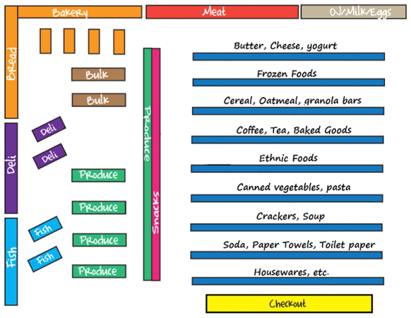
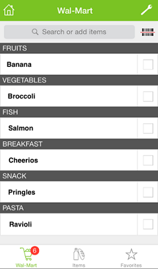
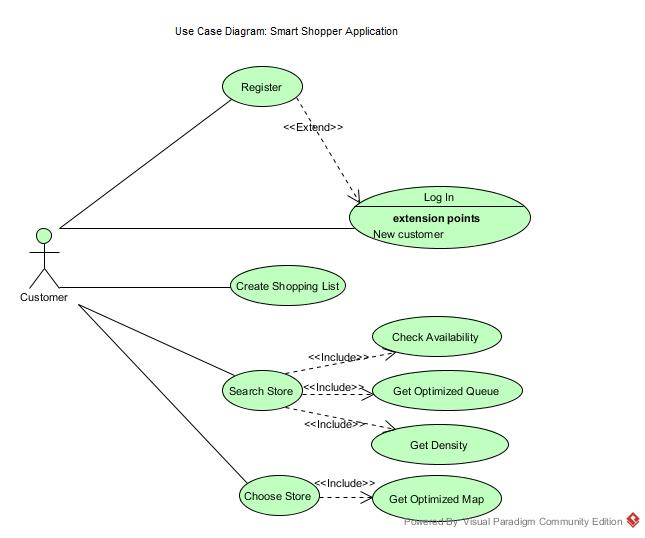
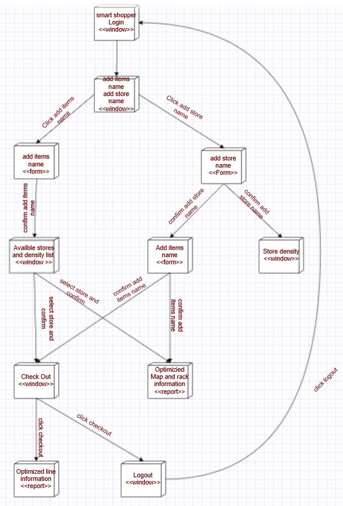
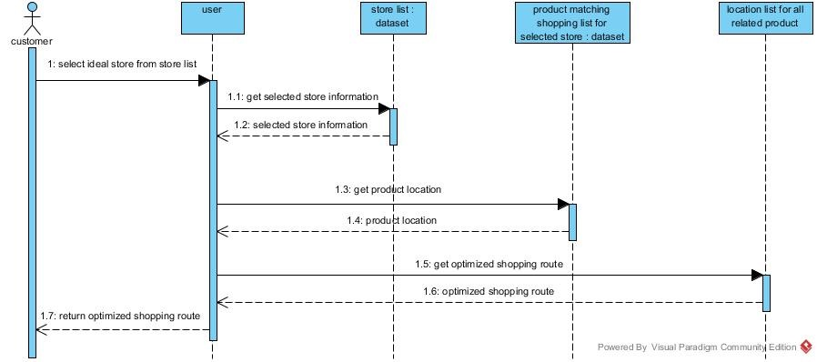

System Analysis & Software Design
Smart Shopper App
Jan. 2015 - May 2015This project is to design a Java-based application which can help shoppers to save time by providing an optimized map to customers to save their shopping time. The database covered following contains: Optimized Map system, Queue Status system, Density count system.
The main tasks are as follows:
*Created bluprint for the system by drawing class diagram and user case diagram
*Analyzed database, functions covered and system working process using sequence diagram
*Created an interface that give different roles different admin rights
*Designed software structure, testing methods, etc.
Introduction
The idea of this project is to -- Optimized Shopping!
Grocery shopping is sometimes a time consuming activity.
Rather than wandering from one aisle to another looking for Items, we guide you with an optimized map to locate your items exactly and save your time.
Smart Shopper App can save your time by providing you with the shortest optimize queue, so whenever your shopping is finished, you can checkout from the shortest queue available.
Planning
 Analysis
Major objects
APP related objects:
Product, queue, store, shopping list
User related objects:
Customer, user(registered)
Register - show register page to new customer
Log In - guides registered user log in to account
Create Shopping List - records new shopping list into the database
Search Store - displays available stores based on customer’s search
Check Availability - displays availabilities of items in shopping list
Get Optimized Queue - displays the length of longest and shortest queue within store
Get Density - calculates number of current customers in each store
Choose Store - allows customer choose one store
Get Optimized Map - show optimized shopping map
Design
Use case Diagram

Navigation diagram

Sequence Diagram - Select Store

Group members: Anuj Gulati, Huiyao Dong, Rohan Ashok Patil, Qiong Li, Yixin Wang